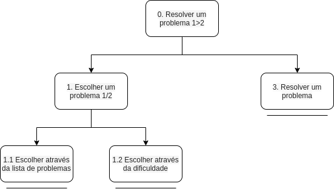

Análise de Tarefas
A análise de tarefas é a atividade que busca ter um entendimento sobre o trabalho dos usuário, como eles realizam este trabalho e o por quê. Nela nós visamos representar todos os métodos de coletar, classificar e interpretar dados que nos ajudem a entender o desempenho de um sistema.
Em IHC a análise de tarefas é geralmente utilizada em três atividades habituais, são elas: - Para a análise da situação atual. (Que pode ser apoiada ou não por um sistema computacional.) - Para o (re)design de um sistema computacional. - Para a avaliação do resultado de uma intervenção que inclua um novo sistema computacional.
Existem diversos métodos de análise de tarefas, no entanto os mais comuns, e que também serão utilizados neste trabalho são: - Análise Hierárquica de tarefas (AHT) - GOMS (Goals, Operators, Methods and Selection Rules)
Análise Hierárquica de tarefas (AHT)
A análise hierárquica de tarefas foi desenvolvida em 1960 com o objetivo de entender as competências envolvidas nas tarefas do usuário, esta avalia primeiro os objetivos de alto nível dos usuários, decompondo-os em subobjetivos.
Objetivos dos Usuários
Os objetivos são as ações que os usuários desejam executar, estes são o nível mais alto da hierarquia de objetivos, quando um objetivo precisa executar mais de uma tarefa para ser finalizado, chamamos essas tarefas de subobjetivos. Já a relação entre um objetivo e seus subobjetivos são chamadas de planos, por fim, quando nós chegamos no nível mais baixo da hierarquia temos uma operação que é quando atingimos um objetivo ou subjetivo.

| Objetivos/Operações | Problemas e Recomendações | ||
|---|---|---|---|
| 0. Resolver um problema 1>2 | input: Resolver uma questão avulsa feedback: Atualiza o seu número de problemas resolvidos e gera dados para MINa plano: Resolver uma questão de um conteúdo já estudado recomendação: observar o estado da resposta para saber se ela estava correta |
||
| 1. Escolher um problema 1/2 | plano: Escolher dentre uma lista de conteúdos suas respectivas questões, ajustando o tipo de questão, dificuldade e categoria. | ||
| 1.1 Escolher através da lista de problemas | |||
| 1.2 Escolher através da dificuldade | |||
| 3. Resolver um problema | input: Enviar resposta da questão feedback: O sistema irá avisar se sua resposta foi correta ou não. Se não for correta, ele indicará o erro |
- Tabela 1. Tabela de representação de tarefas da AHT do obejetivo "Resolver problemas"
GOMS
O GOMS(Goals, Operators, Methods and Selection Rules - Objetivos, Operadores, Métodos e Regras de Seleção) foi criado para analisar o desempenho de usuários competentes de sistemas computacionais, realizando tarefas dentro da sua competência e sem cometer erros. Esse modelo têm se mostrado úteis para prever o desempenho, ou seja, predizer o impacto de decisões de design no desempenho competente. O GOMS é um método para descrever uma tarefa e o conhecimento do usuário sobre como realizá-la em termos de objetivos(goals), operadores(operators), métodos (methods) e regras de seleção (selection rules).
- Os objetivos representam o que o usuário quer realizar utilizando o software
- Um exemplo de objetivo no SAE é realizar uma lista de exercícios
- Os operadores são primitivas internas ou externas, as ações concretas que o software permite que os usuários façam.
- Nas listas realizadas pelos alunos, há questões discursivas onde é inserido dados que são enviados para serem corrigidas pelo professor.
- Os métodos são sequências bem conhecidas de subobjetivos e operadores que permitem atingir um objetivo maior.
- Para realizar uma lista, o usuário deve seguir uma série de passos até a conclusão de seu objetivo.
- As regras de seleção acontece quando há mais do que um método para atingir um mesmo objetivo. Elas representam tomadas de decisão dos usuários sobre qual método utilizar numa determinada situação.
- Quando objetivo é ter um feedback de como o usuário está se saindo nos conteúdos da disciplina, a inteligência artificial MINa realiza essa avaliação e indica para o usuário como ele está se saindo. É possível chegar a esse objetivo de duas maneiras, solicitando orientação ou consultando o relatório.
KLM-GOMS
O KLM é a técnica mais simples de GOMS, limitada a um conjunto predefinido pelos seguintes operadores primitivos:
- K para pressionar uma tecla ou botão;
- P para apontar com o mouse um alvo num dispositivo visual;
- H para mover as mãos para o teclado ou outro dispositivo;
- D para desenhar um segmento de reta em um grid;
- M para se preparar mentalmente para realizar uma ação ou uma série de ações primitivas fortemente relacionadas entre si;
- R para o tempo de resposta do sistema, durante o qual o usuário
Tabela 1. Algumas operações do KLM-GOMS e suas durações médias
| operação | duração média |
|---|---|
| K: pressionar e soltar uma tecla do teclado(média) | 0,20s |
| P: apontar o cursor do mouse num objeto de tela | 1,10s |
| B: pressionar ou soltar o botão do mouse | 0,10s |
| H: levar a mão do teclado ao mouse ou vice-versa | 0,40s |
| M: preparação mental | 1,20s |
| T(n): digitação de cadeia de caracteres | n x K s |
| W(t): espera pela resposta do sistema | depende do sistema |
Tabela 2. Análise da Tarefa: Pedir orientação
| Método | operador | descrição | tempo (s) |
|---|---|---|---|
| Orientação Solicitar > Turma | M | preparação | 1,50 |
| P | Levar cursor até botão Orientação | 1,00 | |
| B | pressionar o botão Orientação | 0,20 | |
| B | Soltar o botão do mouse | 0,20 | |
| P | Levar cursor até botão Orientação na barra lateral | 1,10 | |
| B | pressionar o botão Orientação | 0,20 | |
| B | Soltar o botão do mouse | 0,20 | |
| P | Levar cursor até botão Solicitar | 0,80 | |
| B | pressionar o botão Solicitar | 0,20 | |
| B | Soltar o botão do mouse | 0,20 | |
| P | Levar cursor até botão da Turma | 1,50 | |
| B | pressionar o botão da Turma | 0,20 | |
| B | Soltar o botão do mouse | 0,20 | |
| W | Espera total para resposta do sistema | 10,32 | |
| TOTAL | 17,82 | ||
| Orientação Relatório > Turma | M | preparação | 1,50 |
| P | Levar cursor até botão Orientação | 1,00 | |
| B | pressionar o botão Orientação | 0,20 | |
| B | Soltar o botão do mouse | 0,20 | |
| P | Levar cursor até botão Orientação na barra lateral | 1,10 | |
| B | pressionar o botão Orientação | 0,20 | |
| B | Soltar o botão do mouse | 0,20 | |
| P | Levar cursor até botão Relatório | 0,90 | |
| B | pressionar o botão Relatório | 0,20 | |
| B | Soltar o botão do mouse | 0,20 | |
| P | Levar cursor até botão da Turma | 1,50 | |
| B | pressionar o botão da Turma | 0,20 | |
| B | Soltar o botão do mouse | 0,20 | |
| W | Espera total para resposta do sistema | 5,11 | |
| TOTAL | 12,61 |
Tabela 2. Análise da Tarefa: Pedir orientação
| Método | operador | descrição | tempo (s) |
|---|---|---|---|
| Monitoria Monitoria > Pesquisar Monitoria | M | preparação | 1,50 |
| P | Levar cursor até botão Monitoria | 1,00 | |
| B | pressionar o botão Monitoria | 0,20 | |
| B | Soltar o botão do mouse | 0,20 | |
| P | Levar cursor até botão Monitoria na barra lateral | 1,10 | |
| B | pressionar o botão Monitoria | 0,20 | |
| B | Soltar o botão do mouse | 0,20 | |
| P | Levar cursor até ícone do botão Pesquisar ao lado do campo Disciplina | 1,50 | |
| B | pressionar o ícone do botão Pesquisar | 0,20 | |
| B | Soltar o botão do mouse | 0,20 | |
| P | Levar cursor até botão da Turma | 1,30 | |
| B | pressionar o botão Turma | 0,20 | |
| B | Soltar o botão do mouse | 0,20 | |
| P | Levar cursor até botão Pesquisar Monitoria | 1,10 | |
| B | pressionar o botão Pesquisar Monitoria | 0,20 | |
| B | Soltar o botão do mouse | 0,20 | |
| W | Espera total para resposta do sistema | 6,84 | |
| TOTAL | 16,34 |
CMN-GOMS
O CMN-GOMS possui uma hierarquia estrita de objetivos, os operadores são executados estritamente em ordem sequencial, e os métodos são representados numa notação semelhante a um pseudocódigo, que inclui submétodos e condicionais. Ao elaborar esse modelo, devemos definir cuidadosamente o que representar e o que não representar. Tarefas mentais podem ser complexas, mas apenas aquelas que estejam relacionadas ao design do sistema devem ser incluídas no modelo.Além disso, o nível de detalhes utilizado deve atender aos objetivos da análise. Em etapas iniciais, costumamos representar as estratégias alternartivas que o usuário poderá seguir para atingir seus objetivos. Já para uma análise mais precisa do desempenho, os passos são mais detalhados.
Exemplo 1 - Modelo CMN-GOMS Com Detalhes
- GOAL 0: Fazer questões avulsas
- GOAL 1: Encontrar o conteúdo
- METHOD 1.A: Encontrar através do menu Questões
- OP. 1.A.1: deslocar o cursor do mouse até o botão Questões
- OP. 1.A.2: clicar com o botão esquerdo do mouse
- OP. 1.A.3: deslocar o cursor do mouse até o botão Questões no menu lateral
- OP. 1.A.4: clicar com o botão esquerdo do mouse
- OP. 1.A.5: deslocar o cursor do mouse até o ícone de Pesquisar no campo Disciplina
- OP. 1.A.6: clicar com o botão esquerdo do mouse
- OP. 1.A.7: deslocar o cursor do mouse até o botão da Disciplina desejada
- OP. 1.A.8: clicar com o botão esquerdo do mouse
- OP. 1.A.9: deslocar o cursor do mouse até o ícone de Pesquisar no campo Conteúdo
- OP. 1.A.10: clicar com o botão esquerdo do mouse
- OP. 1.A.11: deslocar o cursor do mouse até o botão do Conteúdo desejado
- OP. 1.A.12: clicar com o botão esquerdo do mouse
- GOAL 1.A.13 Escolher tipo de questão
- METHOD 1.A.13.A: selecionar o tipo de questão de acordo com uma lista de tipos
- (SEL. RULE: preferência do usuário)
- OP. 1.A.13.A.1: deslocar o cursor do mouse para a lista de Tipo de Questão
- OP. 1.A.13.A.2: clicar com o botão esquerdo sobre o tipo de lista desejado
- GOAL 1.A.14 Escolher tipo de questão
- METHOD 1.A.14.A: selecionar a dificuldade da questão de acordo com uma lista de tipos
- (SEL. RULE: preferência do usuário)
- OP. 1.A.14.A.1: deslocar o cursor do mouse para a lista de Dificuldade
- OP. 1.A.14.A.2: clicar com o botão esquerdo sobre o tipo de lista desejado
- GOAL 1.A.15 Escolher tipo de questão
- METHOD 1.A.15.A: selecionar a categoria da questão de acordo com uma lista de tipos
- (SEL. RULE: preferência do usuário)
- OP. 1.A.15.A.1: deslocar o cursor do mouse para a lista de Categoria
- OP. 1.A.15.A.2: clicar com o botão esquerdo sobre o tipo de lista desejado
- GOAL 1.A.16 Ir para a página com as questões
- OP. 1.A.16.1: deslocar o cursor do mouse até o botão Continuar
- OP. 1.A.17.2: clicar com o botão esquerdo do mouse
Referencia
Versionamento
| Data | Versão | Descrição | Autor |
|---|---|---|---|
| 14/10/2020 | 1.0 | Criação das Analise de tarefas | Rafael Ribeiro/ itallo gravina |
| 24/10/2020 | 1.1 | Adicão das referências | Rafael Ribeiro |
| 03/11/2020 | 1.2 | Conclusão da análise de tarefas | Rafael Ribeiro |